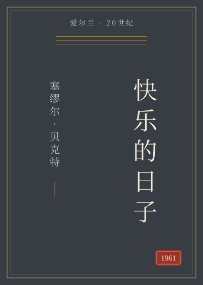
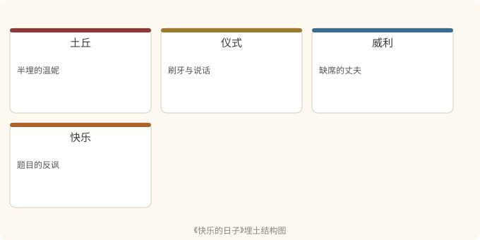

快乐的日子
一、基本信息
| 作者 | 贝克特 |
|---|---|
| 成书/出版 | 1961年（作者页 B094 口径：快乐的日子（1961）） Samuel Beckett — Encyclopaedia Britannica (by Martin J. Esslin)（百科全书） |
| 国别/地区 | 爱尔兰 |
| 时代 | 现当代 · 20世纪 |
| 体裁 | 戏剧 |
| 语言 | 英语 |

《快乐的日子》埋土结构图（主题·结构图）
二、创作背景
作者页（B094）：贝克特 major_works 载'快乐的日子（1961）'（B094 作者页定位，详见 dengdaigou 条核对）。
场景（通说待核）：温妮半埋土丘中——第一幕到腰，第二幕到颈，仍'快乐'地刷牙与说话。
三、内容脉络
温妮的日常仪式：从腰埋到颈（通说待核）。
威利的缺席与呻吟（通说待核）。
四、主要人物表
| 人物 | 身份 | 说明 |
|---|---|---|
| 温妮 | 女人 | 半埋土中（通说待核） |
| 威利 | 丈夫 | （通说待核） |
五、主题与艺术特点
- '快乐'的反讽（通说）。
- buried 的存在状态（通说待核）。
- 日常仪式的坚持（通说）。
六、影响与评论
- 作者页：贝克特戏剧谱系（B094 作者页口径）。
Samuel Beckett — Encyclopaedia Britannica (by Martin J. Esslin)（百科全书） - 与《终局》并立的晚期双作（通说）。
Samuel Beckett — Encyclopaedia Britannica (by Martin J. Esslin)（百科全书）
七、阅读建议
难点
- 身体禁锢的舞台想象。
- 独白的循环。
- 《快乐的日子》（湖南文艺出版社《贝克特选集》，通说待核）。
- 英文/法文原版。
《终局》后读。
八、待核实
- 1961年出版（Grove说）核对。
- 温妮/威利人名核对。
- 两幕埋土程度核对。